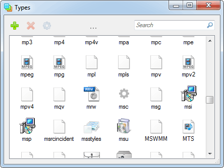

Types is a file type manager for Windows that allows you to edit program associations, icons, context menus and a few other things.

(put the file into one folder with the executable)
Language file template → Submit
Report a bug |
Portable |
Code |
CLI |
Changelog (RSS) |